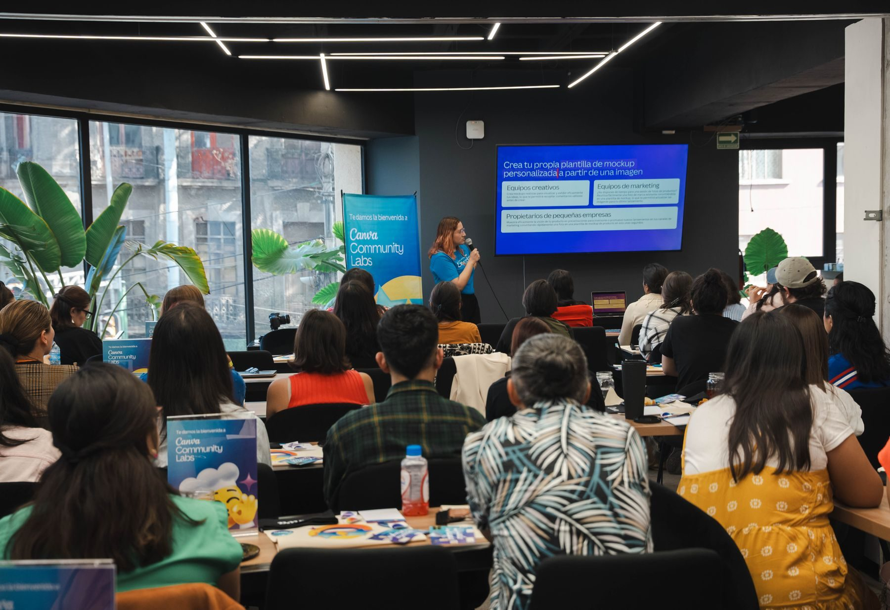
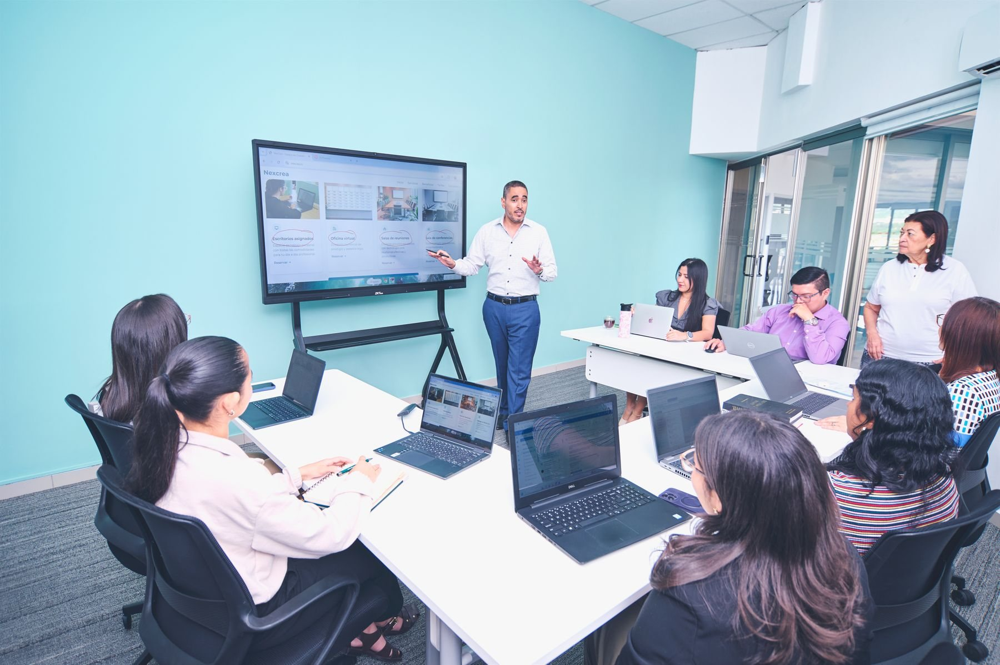
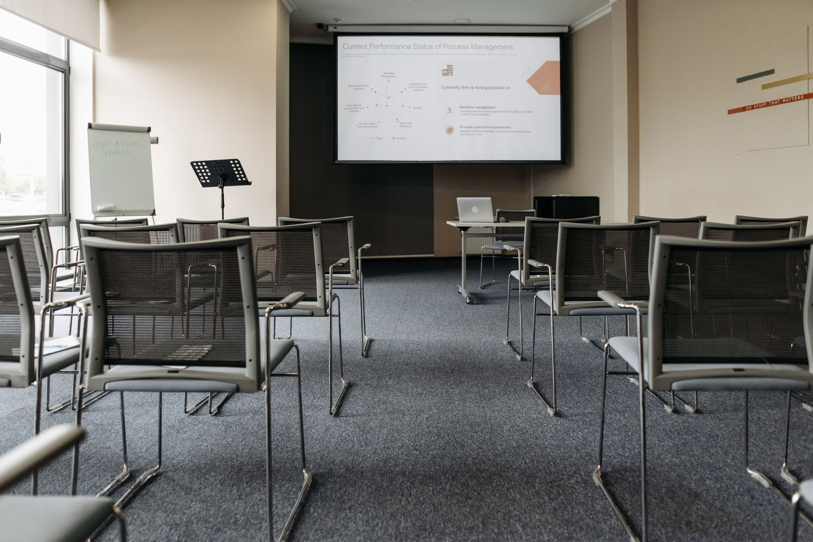
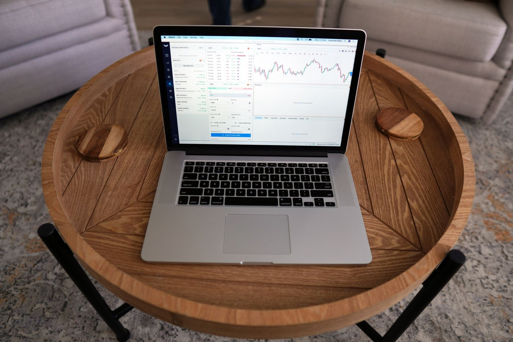
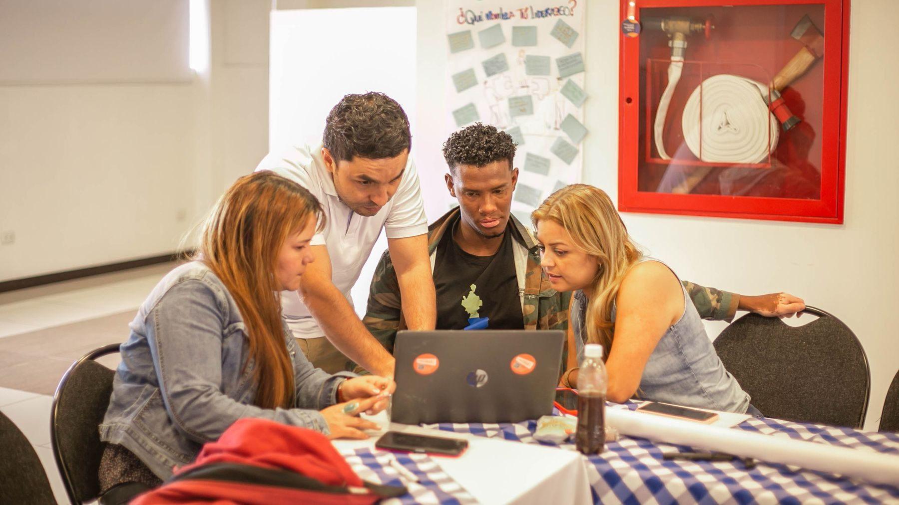

Propuesta 2 de 3 · Capacitación

Plan de capacitación de 36 horas en gestión de pauta digital para el área de marketing de A. Russoniello. Ocho módulos, con práctica sobre la cuenta real de Jeep & RAM.
Esta capacitación se cotiza por separado y es exclusiva para el área de marketing de A. Russoniello. No está atada a la contratación de ningún otro servicio: se puede aprobar sola, sin auditoría y sin gestión de pauta.
Diagnóstico técnico de las cuentas y del ecosistema digital, y gestión mensual de la inversión publicitaria.
36 horas de formación en gestión de pauta digital, con casos prácticos sobre la cuenta real de Jeep & RAM.
Jornada de microcápsulas de contenido: 40-50 fotos y 8-10 videos en una jornada de 4 horas.

En cinco meses en el puesto, el área de marketing identificó campañas mal configuradas, piezas sin adaptar a los formatos, un píxel que no estaba instalado y una segmentación geográfica que llegaba hasta Uruguay. Ese diagnóstico no es menor: es exactamente lo que hace un buen gestor de pauta.
Lo que falta no es criterio. Es el método y el vocabulario técnico para pasar de detectar el problema a corregirlo, defenderlo con datos frente a la gerencia y sostenerlo mes a mes sin depender de nadie más.
Que el área pueda configurar, corregir y optimizar campañas sin depender de una agencia externa para cada cambio.
Poder revisar el trabajo de cualquier proveedor —hoy o en el futuro— y saber si lo que se está haciendo está bien hecho.
Llevar a la gerencia un reporte que explique en qué se invirtió, qué se obtuvo y qué decisión se recomienda, con el lenguaje correcto.

Que dentro de seis meses el área de marketing no necesite esta capacitación de nuevo.
No enseñamos a seguir instrucciones: enseñamos a decidir. Cada módulo termina con una decisión concreta que el equipo tiene que poder tomar solo sobre la cuenta real de A. Russoniello.
Los objetivos están escritos como capacidades verificables, no como temas vistos. Al cierre de las 36 horas, el área de marketing debería poder resolver cada uno de estos puntos por su cuenta.
Definir campañas, conjuntos y anuncios con una lógica clara por línea de negocio: 0km por modelo, plan de ahorro, usados y posventa.
Entender qué optimiza cada objetivo de Meta y de Google, y por qué elegir mal el objetivo arruina la campaña antes de empezar.
Píxel, eventos de conversión, etiquetas y verificación de que efectivamente están registrando lo que dicen registrar.
Definir geografías, radios, exclusiones y públicos que correspondan a quien realmente puede comprar en el salón.
Revisar el material de fábrica, adaptarlo a cada formato y ubicación sin deformarlo, y saber qué mensaje funciona en cada etapa.
Interpretar las métricas que importan, distinguir señal de ruido y traducir el dato en una decisión: pausar, ajustar o escalar.
La capacitación es totalmente virtual: encuentros en vivo por videollamada, de 2 a 3 horas semanales, para que el equipo pueda cursar sin frenar su operación diaria.
Cada encuentro es una clase en vivo por videollamada, con un especialista del otro lado. Se pregunta, se corrige y se resuelve en el momento: no es un curso enlatado que se mira cuando se puede.
Trabajamos con las plataformas abiertas y el equipo mirando lo que se hace, paso a paso. Lo virtual no le quita nada a la práctica: la vuelve más fácil de seguir, porque todos ven la misma pantalla.
Permite sumar participantes de Nordelta y de Junín en el mismo encuentro, sin costo ni tiempo de traslado. Y facilita reprogramar si un día se cruza con una acción comercial.
Distribuidas en 8 módulos temáticos.
Un encuentro semanal, en día y horario fijo.
12 semanas a 3 hs; 18 semanas a 2 hs.
Exclusiva para el área de marketing de A. Russoniello.
Cómo trabaja cada encuentro. No son clases teóricas. Cada módulo abre con el concepto, sigue con demostración en vivo sobre las plataformas y cierra con un ejercicio práctico que el equipo resuelve sobre la cuenta real de A. Russoniello. Lo que se ve el martes se aplica el miércoles.
El temario avanza de lo conceptual a lo operativo y termina aplicándolo todo sobre la cuenta real. La carga horaria por módulo es orientativa y puede reajustarse según el ritmo del grupo, manteniendo el total de 36 horas.
Cómo funciona el ecosistema digital y dónde se para la pauta dentro de él. Embudo de conversión aplicado a la venta de un 0km: de la primera búsqueda a la visita al salón. Diferencia entre captar demanda existente y generar demanda nueva. Qué se puede y qué no se puede pedirle a una campaña.
Estructura de cuenta: campañas, conjuntos y anuncios. Objetivos disponibles y qué optimiza cada uno. Presupuestos, pujas y fase de aprendizaje. Ubicaciones y formatos. Configuración de campañas de mensajes, formularios y tráfico. Errores frecuentes que encarecen la cuenta.
Search y la lógica de la intención de compra. Investigación y selección de palabras clave para el rubro automotor. Concordancias y palabras clave negativas. Nivel de calidad y su impacto directo en el costo por clic. Campañas de Performance Max y Demand Gen. Extensiones y anuncios adaptables.
Qué es el píxel de Meta y por qué sin él la campaña vuela a ciegas. Instalación, eventos estándar y personalizados, API de Conversiones. Etiquetas de Google Ads y GA4. Gestor de etiquetas. Verificación de que los eventos disparan de verdad. Atribución: por qué las plataformas nunca coinciden entre sí.
Segmentación geográfica y área de influencia real de cada salón: radios, inclusiones y exclusiones. Demografía e intereses: cuándo suman y cuándo estorban. Públicos personalizados a partir de tráfico web, base de clientes e interacción. Públicos similares. Estrategia de remarketing por etapa del embudo.
Cómo tomar el material de fábrica y adaptarlo a cada formato sin deformarlo: relaciones de aspecto, zonas seguras, recortes y legibilidad en móvil. Jerarquía del mensaje según etapa del embudo. Qué diferencia a una pieza de marca de una pieza de performance. Cumplimiento de los lineamientos de la marca.
Qué métrica mirar y cuál ignorar. Alcance, frecuencia, CTR, CPC, costo por lead, tasa de conversión y costo por venta. Cómo detectar fatiga creativa y saturación de público. Cómo armar un reporte mensual con lectura de negocio para presentar a la gerencia. Cuándo un dato alcanza para tomar una decisión y cuándo no.
El módulo donde se junta todo. Trabajamos sobre la cuenta real de A. Russoniello: revisión de las campañas activas, corrección de la segmentación geográfica, verificación del estado del píxel, rearmado de una campaña de punta a punta y lectura conjunta del reporte del período. Se sale del módulo con cambios efectivamente aplicados en la cuenta, no con un ejercicio de práctica.
Al finalizar cada módulo, el equipo recibe la documentación de lo trabajado. Al cierre de la capacitación queda un manual de consulta completo, propio de A. Russoniello, que sirve para repasar, para consultar ante una duda puntual y para incorporar a alguien nuevo al área sin volver a empezar de cero.
Un capítulo por módulo con los conceptos, las definiciones y el vocabulario técnico correspondiente.
Procedimientos paso a paso con capturas de las plataformas: cómo instalar el píxel, cómo crear un público, cómo armar una campaña.
Checklists operativos para el día a día: qué revisar antes de publicar, qué revisar cada semana, qué revisar cada mes.
Los ejercicios resueltos sobre la cuenta real, con las decisiones tomadas y su fundamento.
Formato digital · propiedad de A. Russoniello · reutilizable para futuras incorporaciones

Cronograma de referencia con cadencia de 3 horas semanales, que completa el programa en 12 semanas. Con 2 horas semanales, el mismo recorrido se extiende a 18 semanas.
Módulo 1 · 4,5 hs
Módulos 2 y 3 · 11 hs
Módulos 4 y 5 · 8,5 hs
Módulos 6 y 7 · 8 hs
Módulo 8 · 4 hs
Definición de modalidad, día y horario fijo, cantidad de participantes y nivel de partida de cada uno. Ajuste fino del temario según lo que el equipo ya maneja, para no perder horas en lo conocido.
Módulo 1. Marco conceptual, embudo aplicado a la venta de un 0km y expectativas realistas sobre lo que puede lograr la pauta.
Módulos 2 y 3. Las dos plataformas donde hoy está la inversión, en profundidad y con manos sobre la herramienta.
Módulos 4 y 5. El bloque más técnico y el que resuelve el problema de fondo detectado en la cuenta actual.
Módulos 6 y 7. Cómo se adapta el material de fábrica y cómo se arma el reporte mensual para la gerencia.
Módulo 8 sobre la cuenta real de Jeep & RAM, con cambios aplicados en vivo. Entrega del manual de consulta completo y cierre del programa.
Para que no queden zonas grises al momento de la aprobación.
Dentro del valor cotizado
Se cotiza aparte o lo aporta A. Russoniello
Sobre el acceso a la cuenta real. El módulo 8 y varios ejercicios trabajan sobre las campañas activas de A. Russoniello. Para eso se necesita acceso a Meta Business y Google Ads durante los encuentros. El acceso lo conserva y lo administra el equipo interno: Popcorn trabaja acompañando en pantalla, no ejecutando por su cuenta.
La capacitación es un proyecto de única vez. Valores en pesos argentinos, sin IVA.
Por qué conviene mirarlo por hora. La cotización cubre 36 horas de trabajo en vivo con un especialista, más la preparación de cada módulo, los ejercicios sobre la cuenta real y el manual final. Visto por hora, el valor es comparable al de una consultoría puntual, con la diferencia de que acá el conocimiento queda dentro de la empresa y no se va cuando termina el proyecto.
Es una cotización independiente. Este valor no está condicionado a la contratación de la auditoría ni de la gestión mensual de pauta, y tampoco las reemplaza. Si A. Russoniello decide avanzar con más de una propuesta, se coordinan los cronogramas para que la capacitación y la gestión no se superpongan sobre la misma cuenta.
Todos los valores se expresan sin IVA · la facturación se realiza en pesos argentinos
Sin letra chica ni sorpresas al momento de facturar.
Los valores rigen hasta el 21 de agosto de 2026. Pasada esa fecha se revisan por variación de costos.
100% anticipado con valor preferencial, o 50% al inicio y 50% al finalizar el programa o a los 30 días de iniciado, lo que ocurra primero.
Todos los montos se expresan sin IVA. El impuesto se adiciona en la factura según la condición fiscal vigente.
La capacitación es exclusiva para el área de marketing de A. Russoniello. La incorporación de participantes de otras áreas se acuerda previamente.
Los encuentros pueden reprogramarse avisando con al menos 48 horas de anticipación, sin costo adicional y dentro del cronograma pactado.
La documentación y el manual final quedan en propiedad de A. Russoniello para uso interno. No se autoriza su comercialización ni su distribución a terceros.
La totalidad de los encuentros se dictan en vivo por videollamada. No contempla instancias presenciales en las oficinas de A. Russoniello.
Esta propuesta es de uso exclusivo de A. Russoniello. Los datos de la cuenta que se trabajen durante la capacitación no se comparten con terceros.

36 horas, 8 módulos y un manual que queda. Al terminar, el área de marketing va a poder configurar, corregir, auditar y defender cada peso invertido.
Confirmás la propuesta y la forma de pago desde el botón de abajo.
Reunión para definir modalidad, día fijo, participantes y nivel de partida.
12 a 18 semanas de encuentros, según la cadencia elegida.
Módulo sobre la cuenta real y entrega del manual de consulta.